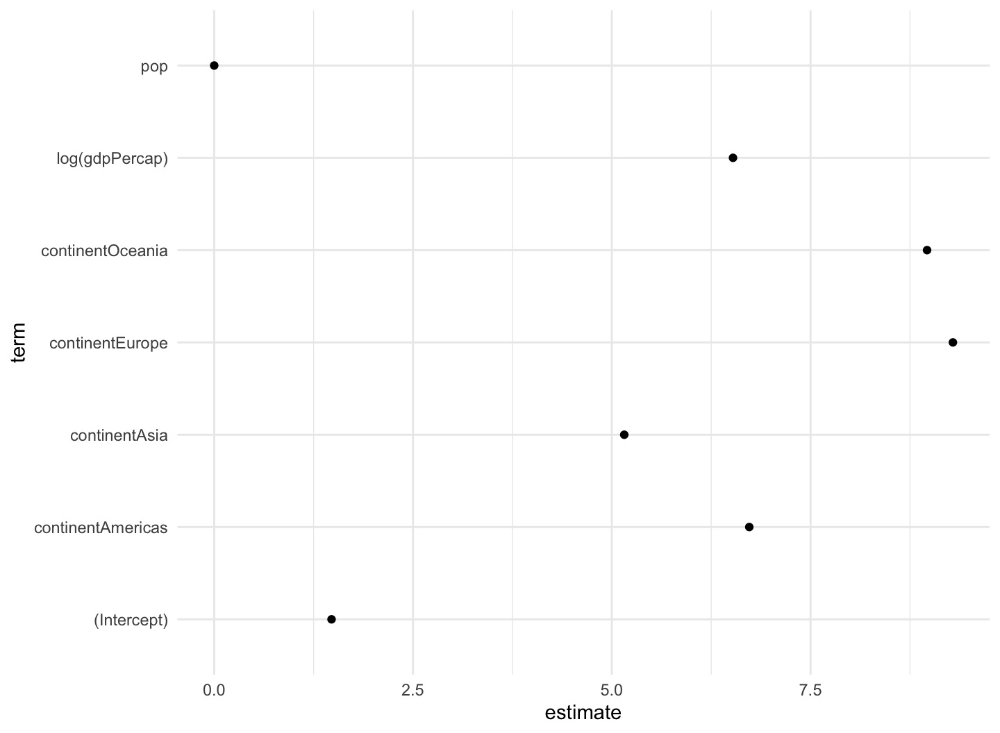
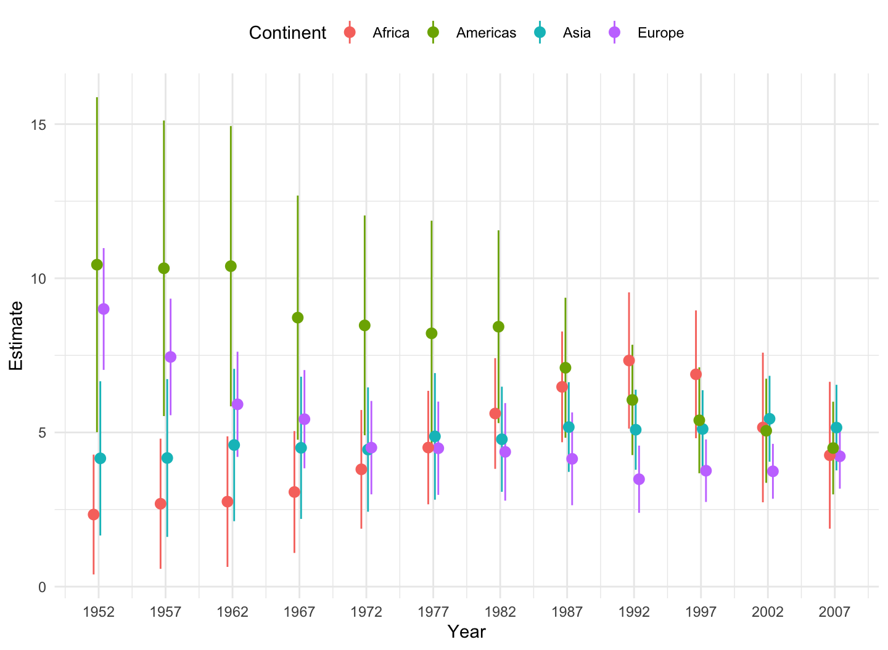
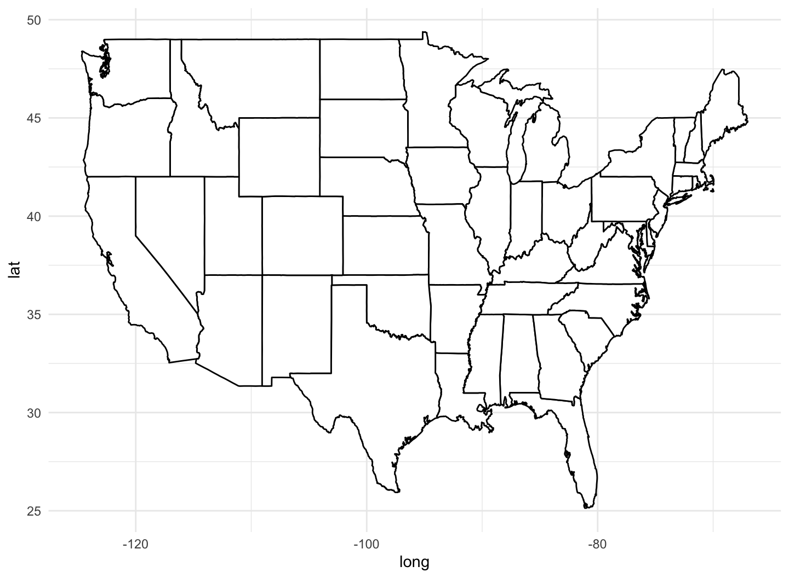

February 24, 2022
Work with models; Draw maps
R packages
library(tidyverse) library(socviz) library(gapminder) library(skimr) library(ggrepel) library(ggthemes) library(broom) theme_set(theme_minimal())
Work with models
- Let us consider the linear regression of
lifeExpongdpPercap,pop, andcontinent.
out <- lm(formula = lifeExp ~ log(gdpPercap) + pop + continent,
data = gapminder)
summary(out)
## ## Call: ## lm(formula = lifeExp ~ log(gdpPercap) + pop + continent, data = gapminder) ## ## Residuals: ## Min 1Q Median 3Q Max ## -26.7090 -3.4832 0.4396 4.4062 18.6914 ## ## Coefficients: ## Estimate Std. Error t value Pr(>|t|) ## (Intercept) 1.476e+00 1.352e+00 1.091 0.275 ## log(gdpPercap) 6.524e+00 1.824e-01 35.778 < 2e-16 *** ## pop 9.990e-09 1.650e-09 6.056 1.72e-09 *** ## continentAmericas 6.729e+00 5.507e-01 12.218 < 2e-16 *** ## continentAsia 5.157e+00 4.880e-01 10.567 < 2e-16 *** ## continentEurope 9.290e+00 5.997e-01 15.491 < 2e-16 *** ## continentOceania 8.965e+00 1.521e+00 5.896 4.49e-09 *** ## --- ## Signif. codes: 0 '***' 0.001 '**' 0.01 '*' 0.05 '.' 0.1 ' ' 1 ## ## Residual standard error: 6.965 on 1697 degrees of freedom ## Multiple R-squared: 0.7102, Adjusted R-squared: 0.7092 ## F-statistic: 693.3 on 6 and 1697 DF, p-value: < 2.2e-16
str(out)
## List of 13 ## $ coefficients : Named num [1:7] 1.48 6.52 9.99e-09 6.73 5.16 ... ## ..- attr(*, "names")= chr [1:7] "(Intercept)" "log(gdpPercap)" "pop" "continentAmericas" ... ## $ residuals : Named num [1:1704] -21.4 -20.2 -18.8 -16.6 -13.8 ... ## ..- attr(*, "names")= chr [1:1704] "1" "2" "3" "4" ... ## $ effects : Named num [1:1704] -2455.1 430.5 58.4 26.9 -24 ... ## ..- attr(*, "names")= chr [1:1704] "(Intercept)" "log(gdpPercap)" "pop" "continentAmericas" ... ## $ rank : int 7 ## $ fitted.values: Named num [1:1704] 50.2 50.5 50.8 50.6 49.9 ... ## ..- attr(*, "names")= chr [1:1704] "1" "2" "3" "4" ... ## $ assign : int [1:7] 0 1 2 3 3 3 3 ## $ qr :List of 5 ## ..$ qr : num [1:1704, 1:7] -41.2795 0.0242 0.0242 0.0242 0.0242 ... ## .. ..- attr(*, "dimnames")=List of 2 ## .. .. ..$ : chr [1:1704] "1" "2" "3" "4" ... ## .. .. ..$ : chr [1:7] "(Intercept)" "log(gdpPercap)" "pop" "continentAmericas" ... ## .. ..- attr(*, "assign")= int [1:7] 0 1 2 3 3 3 3 ## .. ..- attr(*, "contrasts")=List of 1 ## .. .. ..$ continent: chr "contr.treatment" ## ..$ qraux: num [1:7] 1.02 1.03 1.01 1.01 1.04 ... ## ..$ pivot: int [1:7] 1 2 3 4 5 6 7 ## ..$ tol : num 1e-07 ## ..$ rank : int 7 ## ..- attr(*, "class")= chr "qr" ## $ df.residual : int 1697 ## $ contrasts :List of 1 ## ..$ continent: chr "contr.treatment" ## $ xlevels :List of 1 ## ..$ continent: chr [1:5] "Africa" "Americas" "Asia" "Europe" ... ## $ call : language lm(formula = lifeExp ~ log(gdpPercap) + pop + continent, data = gapminder) ## $ terms :Classes 'terms', 'formula' language lifeExp ~ log(gdpPercap) + pop + continent ## .. ..- attr(*, "variables")= language list(lifeExp, log(gdpPercap), pop, continent) ## .. ..- attr(*, "factors")= int [1:4, 1:3] 0 1 0 0 0 0 1 0 0 0 ... ## .. .. ..- attr(*, "dimnames")=List of 2 ## .. .. .. ..$ : chr [1:4] "lifeExp" "log(gdpPercap)" "pop" "continent" ## .. .. .. ..$ : chr [1:3] "log(gdpPercap)" "pop" "continent" ## .. ..- attr(*, "term.labels")= chr [1:3] "log(gdpPercap)" "pop" "continent" ## .. ..- attr(*, "order")= int [1:3] 1 1 1 ## .. ..- attr(*, "intercept")= int 1 ## .. ..- attr(*, "response")= int 1 ## .. ..- attr(*, ".Environment")=<environment: R_GlobalEnv> ## .. ..- attr(*, "predvars")= language list(lifeExp, log(gdpPercap), pop, continent) ## .. ..- attr(*, "dataClasses")= Named chr [1:4] "numeric" "numeric" "numeric" "factor" ## .. .. ..- attr(*, "names")= chr [1:4] "lifeExp" "log(gdpPercap)" "pop" "continent" ## $ model :'data.frame': 1704 obs. of 4 variables: ## ..$ lifeExp : num [1:1704] 28.8 30.3 32 34 36.1 ... ## ..$ log(gdpPercap): num [1:1704] 6.66 6.71 6.75 6.73 6.61 ... ## ..$ pop : int [1:1704] 8425333 9240934 10267083 11537966 13079460 14880372 12881816 13867957 16317921 22227415 ... ## ..$ continent : Factor w/ 5 levels "Africa","Americas",..: 3 3 3 3 3 3 3 3 3 3 ... ## ..- attr(*, "terms")=Classes 'terms', 'formula' language lifeExp ~ log(gdpPercap) + pop + continent ## .. .. ..- attr(*, "variables")= language list(lifeExp, log(gdpPercap), pop, continent) ## .. .. ..- attr(*, "factors")= int [1:4, 1:3] 0 1 0 0 0 0 1 0 0 0 ... ## .. .. .. ..- attr(*, "dimnames")=List of 2 ## .. .. .. .. ..$ : chr [1:4] "lifeExp" "log(gdpPercap)" "pop" "continent" ## .. .. .. .. ..$ : chr [1:3] "log(gdpPercap)" "pop" "continent" ## .. .. ..- attr(*, "term.labels")= chr [1:3] "log(gdpPercap)" "pop" "continent" ## .. .. ..- attr(*, "order")= int [1:3] 1 1 1 ## .. .. ..- attr(*, "intercept")= int 1 ## .. .. ..- attr(*, "response")= int 1 ## .. .. ..- attr(*, ".Environment")=<environment: R_GlobalEnv> ## .. .. ..- attr(*, "predvars")= language list(lifeExp, log(gdpPercap), pop, continent) ## .. .. ..- attr(*, "dataClasses")= Named chr [1:4] "numeric" "numeric" "numeric" "factor" ## .. .. .. ..- attr(*, "names")= chr [1:4] "lifeExp" "log(gdpPercap)" "pop" "continent" ## - attr(*, "class")= chr "lm"
- Try
out$coefficients,out$residuals, andout$fitted.values.
Tidy model objects with broom
The
broompackage to help us do a lot of things with our model output.broomcan tidily extract three kinds of information.- We can see component-level information about aspects of the model itself, such as coefficients and t-statistics.
- We can obtain observation-level information about the model’s connection to the underlying data, such as fitted values and residuals.
- We can get model-level information that summarizes the fit as a whole, such as F-statistic, model deviance, or r-squared.
library(broom)
Get component-level statistics with tidy()
- The
tidy()function takes a model object and returns a data frame of component-level information.
out_comp <- tidy(out) out_comp %>% round_df()
## # A tibble: 7 × 5 ## term estimate std.error statistic p.value ## <chr> <dbl> <dbl> <dbl> <dbl> ## 1 (Intercept) 1.48 1.35 1.09 0.28 ## 2 log(gdpPercap) 6.52 0.18 35.8 0 ## 3 pop 0 0 6.06 0 ## 4 continentAmericas 6.73 0.55 12.2 0 ## 5 continentAsia 5.16 0.49 10.6 0 ## 6 continentEurope 9.29 0.6 15.5 0 ## 7 continentOceania 8.96 1.52 5.9 0
Get component-level statistics with tidy()
- We can work with
tidy()to make plots in a familiar way, and much more easily.
p <- ggplot(out_comp, mapping = aes(x = term,
y = estimate))
p + geom_point() + coord_flip()
Get component-level statistics with tidy()

Get component-level statistics with tidy()
- We can tell
tidy()to calculate confidence intervals for the estimates, using R’sconf.int = TRUEoption.
out_conf <- tidy(out, conf.int = TRUE) out_conf %>% round_df()
## # A tibble: 7 × 7 ## term estimate std.error statistic p.value conf.low conf.high ## <chr> <dbl> <dbl> <dbl> <dbl> <dbl> <dbl> ## 1 (Intercept) 1.48 1.35 1.09 0.28 -1.18 4.13 ## 2 log(gdpPercap) 6.52 0.18 35.8 0 6.17 6.88 ## 3 pop 0 0 6.06 0 0 0 ## 4 continentAmericas 6.73 0.55 12.2 0 5.65 7.81 ## 5 continentAsia 5.16 0.49 10.6 0 4.2 6.11 ## 6 continentEurope 9.29 0.6 15.5 0 8.11 10.5 ## 7 continentOceania 8.96 1.52 5.9 0 5.98 12.0
Get component-level statistics with tidy()
- We can tell
tidy()to calculate confidence intervals for the estimates, using R’sconf.int = TRUEoption.
out_conf <- subset(out_conf, term != "(Intercept)") out_conf$nicelabs <- prefix_strip(out_conf$term, "continent")
- The
socviz::prefix_strip()strips a series of characters from the beginning of a character vector.
Get component-level statistics with tidy()
- We can use
geom_pointrange()to make a figure that displays some information about our confidence in the variable estimates
p <- ggplot(out_conf, mapping = aes(x = reorder(nicelabs, estimate),
y = estimate, ymin = conf.low, ymax = conf.high))
p + geom_pointrange() + coord_flip() + labs(x="", y="OLS Estimate")
Get component-level statistics with tidy()

Get observation-level statistics with augment()
The values returned by
augment()are all statistics calculated at the level of the original observations.Working from a call to
augment()will return a data frame with all the original observations used in the estimation of the model, together with columns like the following:.fitted— The fitted values of the model..se.fit— The standard errors of the fitted values..resid— The residuals;.std.resid— The standardized residuals..hat— The diagonal of the hat matrix..sigma— An estimate of residual standard deviation when the corresponding observation is dropped from the model..cooksd— Cook’s distance, a common regression diagnostic on how the observation is influential in the estimation;
Get observation-level statistics with augment()
out_aug <- augment(out) head(out_aug)
## # A tibble: 6 × 9 ## lifeExp `log(gdpPercap)` pop continent .fitted .hat .sigma .cooksd ## <dbl> <dbl> <int> <fct> <dbl> <dbl> <dbl> <dbl> ## 1 28.8 6.66 8425333 Asia 50.2 0.00427 6.95 0.00578 ## 2 30.3 6.71 9240934 Asia 50.5 0.00416 6.95 0.00503 ## 3 32.0 6.75 10267083 Asia 50.8 0.00408 6.95 0.00426 ## 4 34.0 6.73 11537966 Asia 50.6 0.00410 6.96 0.00337 ## 5 36.1 6.61 13079460 Asia 49.9 0.00433 6.96 0.00244 ## 6 38.4 6.67 14880372 Asia 50.3 0.00419 6.96 0.00175 ## # … with 1 more variable: .std.resid <dbl>
head(out_aug) %>% round_df()
## # A tibble: 6 × 9 ## lifeExp `log(gdpPercap)` pop continent .fitted .hat .sigma .cooksd .std.resid ## <dbl> <dbl> <dbl> <fct> <dbl> <dbl> <dbl> <dbl> <dbl> ## 1 28.8 6.66 8.43e6 Asia 50.2 0 6.95 0.01 -3.07 ## 2 30.3 6.71 9.24e6 Asia 50.5 0 6.95 0.01 -2.9 ## 3 32 6.75 1.03e7 Asia 50.8 0 6.95 0 -2.7 ## 4 34.0 6.73 1.15e7 Asia 50.6 0 6.96 0 -2.39 ## 5 36.1 6.61 1.31e7 Asia 49.9 0 6.96 0 -1.98 ## 6 38.4 6.67 1.49e7 Asia 50.3 0 6.96 0 -1.7
Get observation-level statistics with augment()
- The new columns created by
augment()can be used to create some standard regression plots.- We can draw the residual plot (the residuals versus the fitted values).
p <- ggplot(data = out_aug,
mapping = aes(x = .fitted, y = lifeExp - .fitted))
p + geom_point()
Get observation-level statistics with augment()

Get model-level statistics with glance()
glance()returns the information typically presented at the bottom of a model’ssummary()output.
glance(out) %>% round_df()
## # A tibble: 1 × 12 ## r.squared adj.r.squared sigma statistic p.value df logLik AIC BIC ## <dbl> <dbl> <dbl> <dbl> <dbl> <dbl> <dbl> <dbl> <dbl> ## 1 0.71 0.71 6.97 693. 0 6 -5722. 11460. 11503. ## # … with 3 more variables: deviance <dbl>, df.residual <dbl>, nobs <dbl>
Grouped analysis and list columns
- Consider the linear regression model for the relationship between life expectancy and GDP by continent, for each year in the data.
eu77 <- gapminder %>% filter(continent == "Europe", year == 1977) fit <- lm(lifeExp ~ log(gdpPercap), data = eu77) summary(fit)
## ## Call: ## lm(formula = lifeExp ~ log(gdpPercap), data = eu77) ## ## Residuals: ## Min 1Q Median 3Q Max ## -7.4956 -1.0306 0.0935 1.1755 3.7125 ## ## Coefficients: ## Estimate Std. Error t value Pr(>|t|) ## (Intercept) 29.489 7.161 4.118 0.000306 *** ## log(gdpPercap) 4.488 0.756 5.936 2.17e-06 *** ## --- ## Signif. codes: 0 '***' 0.001 '**' 0.01 '*' 0.05 '.' 0.1 ' ' 1 ## ## Residual standard error: 2.114 on 28 degrees of freedom ## Multiple R-squared: 0.5572, Adjusted R-squared: 0.5414 ## F-statistic: 35.24 on 1 and 28 DF, p-value: 2.173e-06
Grouped analysis and list columns
- With
dplyrandbroomwe can do the grouped analysis for every continent-year slice of the data in a compact and tidy way.
out_le <- gapminder %>%
group_by(continent, year) %>%
nest()
out_le
## # A tibble: 60 × 3 ## # Groups: continent, year [60] ## continent year data ## <fct> <int> <list> ## 1 Asia 1952 <tibble [33 × 4]> ## 2 Asia 1957 <tibble [33 × 4]> ## 3 Asia 1962 <tibble [33 × 4]> ## 4 Asia 1967 <tibble [33 × 4]> ## 5 Asia 1972 <tibble [33 × 4]> ## 6 Asia 1977 <tibble [33 × 4]> ## 7 Asia 1982 <tibble [33 × 4]> ## 8 Asia 1987 <tibble [33 × 4]> ## 9 Asia 1992 <tibble [33 × 4]> ## 10 Asia 1997 <tibble [33 × 4]> ## # … with 50 more rows
nest()creates a list-column of data frames.- The list column,
data, contains a small table of data corresponding to each continent-year group.
- The list column,
Grouped analysis and list columns
- We can look at specific group, for example, “Europe 1977”, if we like, by filtering the data and then unnesting the list column.
out_le %>% filter(continent == "Europe" & year == 1977) %>% unnest()
## # A tibble: 30 × 6 ## # Groups: continent, year [1] ## continent year country lifeExp pop gdpPercap ## <fct> <int> <fct> <dbl> <int> <dbl> ## 1 Europe 1977 Albania 68.9 2509048 3533. ## 2 Europe 1977 Austria 72.2 7568430 19749. ## 3 Europe 1977 Belgium 72.8 9821800 19118. ## 4 Europe 1977 Bosnia and Herzegovina 69.9 4086000 3528. ## 5 Europe 1977 Bulgaria 70.8 8797022 7612. ## 6 Europe 1977 Croatia 70.6 4318673 11305. ## 7 Europe 1977 Czech Republic 70.7 10161915 14800. ## 8 Europe 1977 Denmark 74.7 5088419 20423. ## 9 Europe 1977 Finland 72.5 4738902 15605. ## 10 Europe 1977 France 73.8 53165019 18293. ## # … with 20 more rows
Grouped analysis and list columns
- List columns are useful because we can act on them in a compact and tidy way.
fit_ols <- function(df) {
lm(lifeExp ~ log(gdpPercap), data = df)
}
out_le <- gapminder %>%
group_by(continent, year) %>%
nest() %>%
mutate(model = map(data, fit_ols))
out_le
## # A tibble: 60 × 4 ## # Groups: continent, year [60] ## continent year data model ## <fct> <int> <list> <list> ## 1 Asia 1952 <tibble [33 × 4]> <lm> ## 2 Asia 1957 <tibble [33 × 4]> <lm> ## 3 Asia 1962 <tibble [33 × 4]> <lm> ## 4 Asia 1967 <tibble [33 × 4]> <lm> ## 5 Asia 1972 <tibble [33 × 4]> <lm> ## 6 Asia 1977 <tibble [33 × 4]> <lm> ## 7 Asia 1982 <tibble [33 × 4]> <lm> ## 8 Asia 1987 <tibble [33 × 4]> <lm> ## 9 Asia 1992 <tibble [33 × 4]> <lm> ## 10 Asia 1997 <tibble [33 × 4]> <lm> ## # … with 50 more rows
map()function applies a function to each element of a vector.
Grouped analysis and list columns
fit_ols <- function(df) {
lm(lifeExp ~ log(gdpPercap), data = df)
}
out_tidy <- gapminder %>%
group_by(continent, year) %>%
nest() %>%
mutate(model = map(data, fit_ols),
tidied = map(model, tidy)) %>%
unnest(tidied) %>%
filter(term != "(Intercept)" &
continent != "Oceania")
Grouped analysis and list columns
- We now have tidy regression output with an estimate of the association between log GDP per capita and life expectancy for each year, within continents.
p <- ggplot(data = out_tidy,
mapping = aes(x = year, y = estimate,
ymin = estimate - 2*std.error,
ymax = estimate + 2*std.error,
group = continent, color = continent))
p + geom_pointrange(position = position_dodge(width = 1)) +
scale_x_continuous(breaks = unique(gapminder$year)) +
theme(legend.position = "top") +
labs(x = "Year", y = "Estimate", color = "Continent")
Grouped analysis and list columns

Map U.S. state-level data
- The
socviz::electiondataset has various measures of the vote and vote shares by state.
election %>% select(state, total_vote,
r_points, pct_trump, party, census) %>%
sample_n(5)
## # A tibble: 5 × 6 ## state total_vote r_points pct_trump party census ## <chr> <dbl> <dbl> <dbl> <chr> <chr> ## 1 Tennessee 2508027 26 60.7 Republican South ## 2 Montana 501822 20.2 55.6 Republican West ## 3 South Carolina 2103027 14.3 54.9 Republican South ## 4 Texas 8993166 8.98 52.1 Republican South ## 5 Pennsylvania 6166729 0.710 48.2 Republican Northeast
- We don’t have to represent spatial data spatially.
Map U.S. state-level data
party_colors <- c("#2E74C0", "#CB454A") # Hex color codes for Dem Blue and Rep Red
p0 <- ggplot(data = subset(election, st %nin% "DC"),
mapping = aes(x = r_points,
y = reorder(state, r_points),
color = party))
p1 <- p0 + geom_vline(xintercept = 0, color = "gray30") +
geom_point(size = 2)
p2 <- p1 + scale_color_manual(values = party_colors)
p3 <- p2 + scale_x_continuous(breaks = c(-30, -20, -10, 0, 10, 20, 30, 40),
labels = c("30\n (Clinton)", "20", "10", "0",
"10", "20", "30", "40\n(Trump)"))
p3 + facet_wrap(~ census, ncol=1, scales="free_y") +
guides(color = "none") + labs(x = "Point Margin", y = "") +
theme(axis.text=element_text(size=8))
Map U.S. state-level data

Map U.S. state-level data
- Let us get a data frame of the US state map
us_states <- map_data("state")
head(us_states)
## long lat group order region subregion ## 1 -87.46201 30.38968 1 1 alabama <NA> ## 2 -87.48493 30.37249 1 2 alabama <NA> ## 3 -87.52503 30.37249 1 3 alabama <NA> ## 4 -87.53076 30.33239 1 4 alabama <NA> ## 5 -87.57087 30.32665 1 5 alabama <NA> ## 6 -87.58806 30.32665 1 6 alabama <NA>
dim(us_states)
## [1] 15537 6
Map U.S. state-level data
p <- ggplot(data = us_states,
mapping = aes(x = long, y = lat,
group = group))
p + geom_polygon(fill = "white", color = "black")
- A map is a set of lines drawn in the right order on a grid.
Map U.S. state-level data

Map U.S. state-level data
- Let’s
fillthe map.
p <- ggplot(data = us_states,
aes(x = long, y = lat,
group = group, fill = region))
p + geom_polygon(color = "gray90", size = 0.1) + guides(fill = FALSE)
Map U.S. state-level data
Map U.S. state-level data
- Let’s deal with the projection.
- By default, the map is plotted using the venerable Mercator projection.
- The Albers projection is nicer.
p <- ggplot(data = us_states,
mapping = aes(x = long, y = lat,
group = group, fill = region))
p + geom_polygon(color = "gray90", size = 0.1) +
coord_map(projection = "albers", lat0 = 39, lat1 = 45) +
guides(fill = FALSE)
We can transform the default projection used by
geom_polygon(), via thecoord_map()function.- The Albers projection requires two latitude parameters,
lat0andlat1.
- The Albers projection requires two latitude parameters,
Map U.S. state-level data
Map U.S. state-level data
- Let’s get the
electiondata on to the map
election$region <- tolower(election$state) us_states_elec <- left_join(us_states, election)
In the map data,
us_states, the state names (in a variable namedregion) are in lower case.Here we can create a variable in the
electiondata frame to correspond to this, using thetolower()function to convert the state names.It is important to know your data and variables well enough to check that they have merged properly.
- FIPS code is useful in joining the data.
Map U.S. state-level data
p0 <- ggplot(data = us_states_elec,
aes(x = long, y = lat,
group = group, fill = party))
p0 + geom_polygon(color = "gray90", size = 0.1) +
coord_map(projection = "albers", lat0 = 39, lat1 = 45)
- We use our
partycolors for thefill.
Map U.S. state-level data

Map U.S. state-level data
p1 <- p0 + geom_polygon(color = "gray90", size = 0.1) +
coord_map(projection = "albers", lat0 = 39, lat1 = 45)
p2 <- p1 + scale_fill_manual(values = party_colors) +
labs(title = "Election Results 2016", fill = NULL)
p2 + theme_map()
Map U.S. state-level data
Map U.S. state-level data
- To the
fillaethetic, let’s try a continuous measure, such as the percentage of the vote received by Donald Trump (pct_trump).
p0 <- ggplot(data = us_states_elec,
mapping = aes(x = long, y = lat, group = group, fill = pct_trump))
p1 <- p0 + geom_polygon(color = "gray90", size = 0.1) +
coord_map(projection = "albers", lat0 = 39, lat1 = 45)
p1 + labs(title = "Trump vote") + theme_map() + labs(fill = "Percent")
Map U.S. state-level data
Map U.S. state-level data
Blue is not the color we want here.
The color gradient runs in the wrong direction.
Let’s fix these problems using
scale_fill_gradient():
p2 <- p1 + scale_fill_gradient(low = "white", high = "#CB454A") +
labs(title = "Trump vote")
p2 + theme_map() + labs(fill = "Percent")
Map U.S. state-level data

Map U.S. state-level data
- For election results, we might prefer a gradient that diverges from a midpoint.
- The
scale_gradient2()function gives us a blue-red spectrum that passes through white by default. - We can also re-specify the mid-level color along with the
highandlowcolors.
- The
p0 <- ggplot(data = us_states_elec,
mapping = aes(x = long, y = lat, group = group, fill = d_points))
p1 <- p0 + geom_polygon(color = "gray90", size = 0.1) +
coord_map(projection = "albers", lat0 = 39, lat1 = 45)
p2 <- p1 + scale_fill_gradient2() + labs(title = "Winning margins")
p2 + theme_map() + labs(fill = "Percent")
Map U.S. state-level data
Map U.S. state-level data
- From the
scale_gradient2()function, we can also re-specify the mid-level color along with thehighandlowcolors.
p3 <- p1 + scale_fill_gradient2(low = "red",
mid = scales::muted("purple"),
high = "blue",
breaks = c(-25, 0, 25, 50, 75))
p3 + theme_map() + labs(fill = "Percent", title = "Winning margins")
Map U.S. state-level data

Map U.S. state-level data
- If you take a look at the gradient scale for this first “purple America” map,
p3, you’ll see that it extends very high on the Blue side.- This is because Washington DC is included in the data.
- If we omit Washington DC, we’ll see that our color scale shifts.
p0 <- ggplot(data = subset(us_states_elec,
region %nin% "district of columbia"),
aes(x = long, y = lat, group = group, fill = d_points))
p3 <- p1 + scale_fill_gradient2(low = "red",
mid = scales::muted("purple"),
high = "blue",
breaks = c(-25, 0, 25, 50, 75))
p3 + theme_map() + labs(fill = "Percent", title = "Winning margins", caption = "DC is omitted.")
Map U.S. state-level data